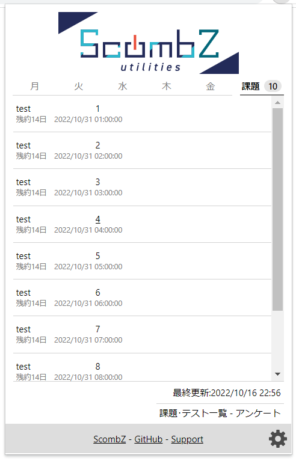

設定ファイル入出力
設定エクスポート
設定インポート
基本設定
入学年度と学部の設定
この情報は、シラバスの絞り込みにのみ利用され、それ以外の目的には利用されません。
year
fac
ログインボタン自動クリック
clickLoginBtnログイン状態でないときにアクセスすると、すぐにパスワード入力ダイアログが表示されます。
ADFS自動クリック
adfsSkipログイン後、自動でScombZの画面に入れます。
※スマートフォンを利用した二段階認証を利用している方はご利用になれません。
左メニューを自動で閉じる
exitSidemenuメニューボタンを押すことで展開できます。
左メニュースタイル変更をオンにしている場合は、本項目もオンにすることが推奨されます。
左メニューのスタイル変更
styleSidemenu表示だけでなく、グレーの部分をクリックすることによっても、メニューを閉じられるようになります。
before

after

メニュー横の時間割表示(※左メニュースタイル変更必須)
addSubTimetable ※この設定は、左メニューのスタイル変更がオフの場合自動的にオフになります。この時間割はLMS以外の画面でも展開できるため、科目ページに直接アクセスできます。
時間割のみを表示した場合

時間割と課題一覧を表示した場合

メニュー横の課題表示(※左メニュースタイル変更必須)
tasklistDisplay ※この設定は、左メニューのスタイル変更がオフの場合自動的にオフになります。この課題一覧は、約20分毎に自動更新され、課題一覧ページに直接飛ぶか、最終更新時刻をクリックすることでも更新できます。
課題一覧のみを表示した場合
時間割と課題一覧を表示した場合
ユーザーメモ(※一部左メニュースタイル変更必須)
notepadMode ※この設定は、左メニューのスタイル変更がオフの場合一部の機能が自動的にオフになります。また、科目ページにメモを挿入できます。

ページヘッダのScombZアイコンのリンク先(※左メニュースタイル変更必須)
headLinkTo ※この設定は、左メニューのスタイル変更がオフの場合自動的にオフになります。レポート提出ボタンの変更
changeReportBtnbefore
after

テスト・アンケートのスタイルの変更
styleExamBtnまた、誤クリックによって入力したデータが消えることを防止するために、受験中では提出ボタン意外の遷移ボタンを押すと「このサイトを離れてもよろしいですか？」という警告を表示するようになります。
そして、テストは1分ごとに自動的に保存されるようになり、Ctrl (Command) + Sキーでも保存ができるようになります。
アンケート画面においては、ボタンがユーザビリティが考えられた物に変更されよくなります。
ホイールクリックで新規タブで開けるようにする
mouseDownただし、本拡張機能でサポートするのはLMSの各科目リンクと、各科目ページに添付されたファイルのみで、それ以外のリンクは未対応のものがあります。
完了したレポートをカレンダーに表示しない
hideCompletedReportsbefore
after
おしらせダイアログを大きくする
styleDialogまた、ダイアログの外をクリックすることでもダイアログを閉じられるようになります。
before
after

各科目にシラバスボタンの追加
syllBtnこのリンクは自動生成されたものであり、うまく授業のシラバスがみつからなかったり、違う科目の授業が開くことがあります。
ログアウトボタンの変更
changeLogoutbefore

after

最大横幅を設定
setMaxWidth最大幅はデフォルトで1280pxですが、詳細設定で変更できます。
トップへボタンを消す
pageTopBtnダイレクトリンクを消す
remomveDirectLinkLMSで現在のコマを目立たせる
styleNowPeriod課題ドラッグ&ドロップ提出
ddSubmission課題削除できないバグの修正
dadbugFix更新通知全削除ボタンを追加
updateClearこのボタンを押すことで、ユーザーは更新一覧画面に行くことなく通知を削除できます。
出欠表示削除
attendance※表示のみを削除することも可能です。
ホーム画面のスタイル変更
layoutHome最大横幅(1280px変更不可)が適用され、重要リンク集が右カラムに表示されます。
before
after

ページ上部にあるバナーのスタイル
fixHeadShadowbefore

after

ダークモード
darkmodeダークモード適用時


カレンダーエクスポート
exportIcs過去のアンケートの表示
pastSurveyこのデータは拡張機能本体に累積されていくので、拡張機能導入より前のデータや、拡張機能が一度も読み取れなかったデータにはアクセスできません。
「アンケート一覧に戻る」ボタンの表示
addSurveyListButton履修者名表示
displayNameこの設定をオンにすると、右上部に名前が表示されなくなります。
詳細設定から、表示名をニックネーム等に変更することもできます。
時間割設定
adjustTimetableData時間割に関する設定です。
表示デモ
土曜日非表示
eraseSat土曜日授業がない場合におすすめです。
6限非表示
erase66限授業がない場合におすすめです。
7限非表示
erase76限授業がない場合におすすめです。
LMS教室表示
dispClassroomLMSセンタリング
timetableCenteringbefore
after
科目ページ設定
科目ページのレイアウトに関する設定です。科目ページ要素入れ替え
存在しない要素がある場合はその要素を抜いた状態での並び替えが行われます。
教材の順番を統一
使わない教材を非表示
自動的に非表示にするものも選択できます。
非表示状態
表示状態
締切過ぎ課題・提出済み課題・提出不可課題非表示
また、一次的に再表示するボタンも追加します。
締切過ぎテスト・受験済みテスト非表示
また、一次的に再表示するボタンも追加します。
ページタイトルに科目名を表示
科目ページ内に課題追加
addTaskInPageこのボタンを押すと、通常時とは異なり、現在表示している科目名と科目URLが自動で入力されます。
手動追加課題の自動入力
autoTaskInputこのボタンを押すことで、現在閲覧している科目の科目名とURLを自動で入力します。
手動追加課題の自動時間入力
addTaskTimeButton押されているボタンに対応した時刻・日付を簡単入力するボタンを追加します。
エンターで出席したときのバグ修正
enterAttendanceポップアップ設定
アドレスバー右の拡張機能アイコンをクリックした際に表示される、ポップアップに関する設定です。「課題」タブの表示
popupTasksTab「課題」タブでは未提出の課題を一覧形式で表示できます。
課題タブ下部のリンクの表示
popupTasksLinks課題が多い場合の表示方式
popupOverflowMode省略する
スクロールして表示する

未提出課題数のバッジ表示
popupBadge一定より先の課題をバッジにカウントしない
popupUncountFutureTaskDays※この数を超える課題は、存在していても表示されません。課題がなくなったわけではないことに注意してください。
カウントから除外した課題を暗くする
popupDarkenUncountedTasks実験的な設定
バグが確認されているか、バグになる可能性が高い設定です。テストの画像スタイル変更(実験的)
styleExamImg ※この設定は実験的です。必要がない場合はオフにしてください詳細設定
最大横幅の設定
maxWidthPxデフォルトは1280pxです。
subj
lms
task
ニックネームの設定
nickname作成時間簡易入力の設定
timesBtnValue
sliderBarMax
課題一覧の位置調整
tasklistTranslateこの値を大きくすると表示位置が下に移動し、小さくすると上に移動します。
課題一覧の表示方式
deadlinemode課題一覧の最大表示数
maxTaskDisplay※この数を超える課題は、存在していても表示されません。課題がなくなったわけではないことに注意してください。
一定より先の課題を表示しない
undisplayFutureTaskDays※この数を超える課題は、存在していても表示されません。課題がなくなったわけではないことに注意してください。
課題一覧を提出期限でハイライトする
highlightDeadline具体的に、グレーで表示される提出期限が、一週間以内だと文字色が黒になり、3日以内だと文字色が赤になり、当日中だと文字色が赤かつ太字になり、提出期限12時間以内だと背景も赤色になります。
ファイル名の自動入力設定
defaultInputName非表示にした課題の再表示
Google連携設定
Googleカレンダー及びGoogle ToDo（リマインダー）に課題・アンケートが自動登録され、スマートフォンやその他デバイスで確認しやすくなります。
有効にするには初期設定が必要です。初期設定の手順はこちら(所要時間: 5~10分程度)
設定の初期化
バグ報告・寄付
バグ報告・お問い合わせ
バグを発見した場合は、GitHubからissueを送るか、Googleフォームにお知らせください。
お問い合わせ、質問の場合は、Googleフォームか、うだい宛までTwitter DMをご利用ください。
寄付
この拡張機能はすべての機能を無料でご利用いただけますが、開発・維持に費用がかかります。
もしご厚意で寄付してくれる方がいたら、こちらから寄付していただけるとありがたいです。
↓寄付リンクをスマホに送る↓
Gmailを開く
拡張機能情報
ScombZ Utilities
この拡張機能は、ScombZのユーザビリティの向上を目的としたオープンソースプロジェクトです。
公式サイト
version:
使用ライブラリ :
- encording.js
- jQuery
- CodeMirror
- ics.js
- marked.js
制作 : うだい
アイコン・ヘッダ作成 : Miuye
開発協力 : 天雲